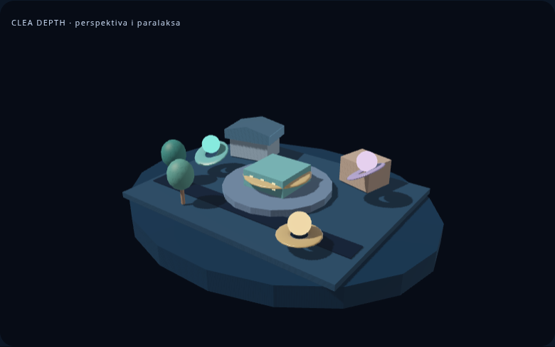

TVOJA IDEJA. TVOJ JEZIK. TVOJ STUDIO.
Od zamisli
do žive aplikacije.
Oblikuj u Drawu, poveži ponašanje BIL-om i pokreni u istom Runtimeu. Ekrani, objekti, podaci i pristupačnost rade zajedno.
Studio radi u pregledniku, bez prijave na vlasnikov računar.
Provjeravam konfiguraciju AI servisa…
 CLEA StudioDraw BIL Pokreni
CLEA StudioDraw BIL Pokreni
POČNI OD SVOJE IDEJE
Šta želiš napraviti?
Opis se prenosi u isti Studio razgovor. Ti odlučuješ kada ćeš ga poslati modelu.
JEDNA POVEZANA PLATFORMA
Oblikuj. Poveži. Pokreni.
Jedan projekat ostaje uredljiv kroz Draw, BIL i Runtime. Svaka nova ideja može početi od praznog projekta.
CLEA7 Draw
Crteži postaju funkcionalni objekti. Poveži događaje, stanje, kretanje i radnje u provjerljivu logiku.
Oblikuj aplikacijuProstor, 2D i 3D
Sastavljaj scene, vlastite konture i geometrije. Uređuj kameru, svjetlo, materijale i ponašanje.
Istraži CLEA DepthTvoj BIL jezik
Objekti, zapamćena polja, odnosi i radnje. Isti izvor prolazi gramatiku, tipove i izvršnu provjeru.
Upoznaj jezikCLEA AI u Studiju
Razgovor i izrada koriste iste Draw/BIL alate. Prijedlog prolazi provjere i tvoj pregled prije primjene.
Otvori isti radni prostorSense i Sense CV
Vođenje dodirom, fokusom i govorom. U Sense CV-u uporedi dokument s oglasom i pregledaj dokaze.
Otvori Sense CVRuntime i tvoje aplikacije
Pokreni projekat, provjeri ponašanje i izvezi samostalnu HTML aplikaciju ili CLEA7 paket.
Otvori bibliotekuISTI PROJEKAT OD POČETKA DO KRAJA
Izgled i ponašanje
ostaju povezani.
Promijeni ime, boje ili raspored bez prepisivanja poslovne logike. Dodaj zvuk s vidljivim tekstom, sliku ili novi funkcionalni objekat. Pokreni stvarne testove, pa preuzmi rezultat.
Kreiraj svoj projekat- Opiši ili oblikujKreni prazno, unesi ideju ili nastavi svoju sačuvanu skicu.
- Poveži stvarne radnjeDraw uređuje isti BIL izvor koji pokreće aplikaciju.
- Provjeri i isprobajPregled, testovi i trag izvršavanja pripadaju istom projektu.
- Preuzmi i nastavi uređivatiSamostalni HTML, CLEA7 paket i izvor ostaju tvoji.
OTVORI. KREIRAJ. PREUZMI.
CLEA na jednom mjestu.
Web Studio 0.48.0-test i SDK 0.48.0-test. Zasebni Windows i Android Runtime paketi imaju vlastite verzije i provjere.